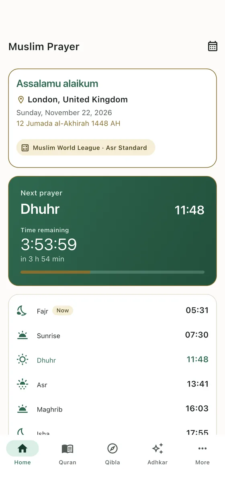

Help and support
Muslim Prayer
Prayer times for your city, Adhan reminders, the Quran in Arabic, the Qibla direction, Adhkar, Tasbih and the Hijri calendar, in one calm app. Find answers here, or write to us.

Find help by topic
What is in the app
Prayer times
Today's times with a countdown to the next prayer, and a monthly timetable. 10 calculation methods and a manual adjustment for each prayer.
Adhan notifications
For each prayer, choose the Adhan, a short sound or silence. Scheduled on your device.
Qibla
The direction from your selected city, with a live compass on devices that have one.
Quran
The complete Arabic text, readable offline, with search, bookmarks and reading progress.
Adhkar and Tasbih
Morning, evening, after-prayer and other Adhkar in Arabic with their references, and a digital counter.
Hijri calendar and Ramadan
A monthly Hijri calendar, Suhoor and Iftar times, a Ramadan timetable and a private fasting tracker.
Good to know about prayer times
Prayer times and Hijri dates are calculated. They depend on the location, calculation method and settings you choose, and they can differ from your local mosque or authority by some minutes, or by a day or two for Hijri dates.
When they differ, follow the source you trust. You can adjust each prayer and the Hijri date in the app.
Version covered by this site
Muslim Prayer 1.0.0 for iPhone (iOS 15 or later). Free, with no account and no ads in this version. The app is available in English, French, Arabic, Spanish, Italian and German.
Your privacy
The Privacy Policy explains what the app processes and the choices you have.